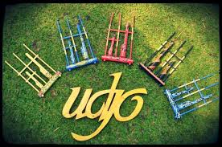

Jam buka Saung angklung udjo sendiri adalah setiap hari, senin hingga minggu, mulai buka dari pukul 08.00 – 22.00 WIB.
Untuk informai harga tiket masuk saung angklung udjo terbaru, jadwal acara pementasan seni dan budaya, reservasi dll.
Silahkan
hubungi (022) 7271714.

Jalan Padasuka No.118, Pasirlayung, Cibeunying Kidul, Kota Bandung, Jawa Barat 40192
Kendaraan Pribadi
Jika naik kendaraan pribadi dari Arah kota Jakarta, maka rute terbaik dan tercepat adalah via tol cipularang.
Keluar tol pasteur, kemudian arahkan menuju ke jembatan layang Pasopati, dan selanjutnya ikuti papan petunjuk ke Arah Cicaheum.
Nah kurang lebih Sekitar 100 meter sebelum Terminal Cicaheum, ada papan petunjuk menuju Jalan Padasuka, hingga tiba ke lokasi.
Transportasi Umum
Kita juga bisa memilih transportasi angkutan umum sebagai pilihan untuk menuju saung angklung udjo.
Caranya adalah dari Surapati, pilih angkutan umum 06 jurusan Cicaheum – Ciroyom (arah Cicaheum)
Selanjutnya anda turun di perempatan Padasuka (100 meter sebelum Cicaheum), lanjutkan dengan berjalan kaki atau naik ojek menuju Saung Udjo (500 meter).